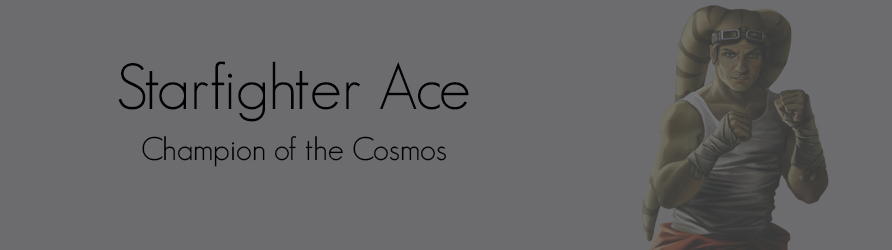
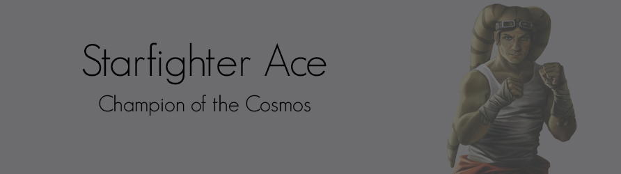

Though the lightsaber is an iconic weapon for many Force users, some dedicate themselves wholly to becoming paragons of strife. These dangerous individuals are known as Warriors.
At their most basic, Warriors are focused combatants who use the Force to augment their prodigious martial prowess. Whether flying in the pilot’s seat of a starfighter, wielding a lightsaber on the field of battle, or blazing away with a blaster pistol, Warriors excel in combat of all types.
Legends indicate that the Jedi Order's origins began with warriors who worked to integrate Force techniques into their physical training. Even in the absence of the Old Republic’s guardians, this association remains. The Force can give strength to those who need it, and Warriors excel at exploiting that strength. They become a physical manifestation of the Force, willing and ready to overcome those who would inflict harm.
The Warrior’s greatest strength, however, can also be his most dangerous weakness. Endless aggression can be a path toward the dark side. A wise individual must recognize that violence has its place but is not the only possible answer. A Warrior can inflict substantial and precise damage. Flowever, even carefully applied attacks can still have far-reaching consequences. Because of this, it can be every bit as important for a Warrior to recognize when it is more appropriate not to attack. Some individuals who follow this career consider this sense of judgment to be the most important aspect of their training.
Warriors can come from a broad range of different cultures and environments. Physical conflict is every bit as common within the civilized and technologically advanced worlds of the Core as it is within the less structured societies of the Outer Rim. Combat styles and the tools employed within conflicts may change, but the motivations and final outcomes are often similar. Ultimately, Warriors must be willing to risk their own lives so that they can overcome threats to themselves and to those they hold most dear.
 
